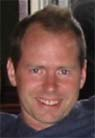
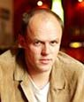
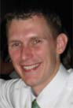

|
 |
|
Industry track
Presenter Biographies
Dion Almaer, CTO of Adigio, Inc
Moderator: Panel on Challenges and Opportunities for Industry Adoption
|
|
Dion Almaer is the CTO of Adigio, Inc, a leading enterprise consulting company
that focuses on community and open source. Dion is a columnist on Enterprise
Java topics at openxource.com, onjava.com and TheServerSide.com where he acts as
editor. He enjoys writing, and speaking at events such as the No Fluff Just
Stuff symposium tour, JavaPolis, TheServerSide Symposium, and more.
|
Ron Bodkin, New Aspects of Software
Invited Talk: Application Security Aspects
|
|
Ron Bodkin is the founder of New Aspects of Software, which provides
consulting and training on application development with an emphasis on
aspect-oriented programming and security. Ron is also a member of AspectMentor,
a consortium of AOP experts. Ron works with customers on creating high
performance, robust application architectures and on adopting AOP. Ron
speaks and gives tutorials frequently for customers and at conferences.
|
Jonas Bonér, BEA Systems, AspectWerkz founder and AspectJ 5 co-lead
Participant in Panel on Challenges and Opportunities for Industry Adoption
Invited Talk: What's new in AspectJ 5
Invited Talk: AspectWerkz 2 and the road to AspectJ 5
|
|
Jonas Bonér is a Senior Software Engineer at the Java Runtime Products Group,
BEA Systems. He is the founder of the AspectWerkz AOP framework and an active
contributor to the Java Open Source community. Jonas is a frequent speaker on
Aspect-Oriented Software Development (AOSD, JavaOne, eWorld, JavaPolis etc.)
|
Bill Burke, Chief Architect, JBoss Inc.
Participant in Panel on Challenges and Opportunities for Industry Adoption
Invited Talk: Implementing Middleware Using AOP
|
|
Bill Burke is Chief Architect of JBoss Inc. He is currently leading
the implementation effort on JBoss AOP and EJB 3.0. Bill is a co-author
of O'Reilly's "EJB 4th Edition" and is also published in various trade
magazines like OnJava.com, Linux Magazine, and Java Developer's Journal.
He is also involved with the JCP being JBoss's co-representative on
the EJB 3.0 and Common Annotations JSR committees.
|
Jim Clark, Oracle Corporation
Invited Talk: Object Persistence Aspects
|

|
Jim Clark is a member of the OracleAS Solution Architects Team.
He specializes in J2EE/Toplink development and is currently driving
the effort, from the Oracle side, to integrate TopLink and Spring.
Other current projects include using AOP techniques to enhance
Object persistence.
|
Adrian Colyer, IBM, AspectJ and AJDT project leader
Participant in Panel on Challenges and Opportunities for Industry Adoption
Invited Talk: Adopting AOP
Invited Talk: What's new in AspectJ 5
Invited Talk: AOP in Spring
|
|
Adrian Colyer is an IBM Senior Technical Staff Member based in Hursley,
England. He leads the open-source AspectJ and AJDT projects on
Eclipse.org
and is a frequent writer and speaker on AspectJ and aspect-oriented
programming. He is a co-author of the book "Eclipse AspectJ:
Aspect-Oriented Programming with AspectJ and the Eclipse AspectJ
Development Tools." In 2004 he was named as one of the top 100 "young
innovators" by the MIT Technology Review magazine. Prior to working on
aspect-oriented technologies, Adrian worked on distributed systems
middleware for nearly a decade.
|
Rod Johnson, CEO Interface21, Spring Framework founder
Participant in Panel on Challenges and Opportunities for Industry Adoption
Invited Talk: AOP in Spring
|
|
Rod Johnson is the author of the best-selling "Expert One-on-One J2EE Design and
Development" and "J2EE without EJB," and the founder of the Spring Framework. He
is on the Servlet 2.4 and JDO 2.0 Expert Groups. Rod has been working with Java
and J2EE since their release, consulting in the media, insurance and financial
industries. He is CEO of Interface21, an international company providing expert
Spring Framework and J2EE consultancy.
|
Mik Kersten, University of British Columbia, AspectJ and AJDT committer
Invited Talk: Comparison of the leading AOP tools
|

|
Mik Kersten is a PhD student and IBM CAS fellow at the University of British
Columbia, where he is working on making IDEs more Aspect-Oriented. He is also a
committer on the AspectJ and AJDT eclipse.org projects. Before going back to
school he developed the original AspectJ IDE integration at Xerox PARC.
|
Gregor Kiczales, University of British Columbia, led PARC team that invented AspectJ
Invited Talk: Adopting AOP
|
|
Gregor Kiczales is Professor of Computer Science at the University of British
Columbia. Previously he was a Principal Scientist at
the Xerox Palo Alto Research Center. His work focuses on techniques that enable
programmers
to write code that, as much as possible, looks like the design.
He lectures and teaches widely about aspect-oriented programming, and is
currently involved in several AOP research projects. While
at Xerox PARC, he led the team that developed AOP and AspectJ. Prior to that
worked extensively in reflection and object-oriented
programming. He is a co-author, with Danny Bobrow and Jim des Rivieres of The
Art of the Metaobject Protocol.
|
Vinay Kulkarni, Scientist, Tata Research Development and Design Centre
Practitioner Report: Using Aspect Orientation To Restructure A Model-Driven Development Framework
|
|
Vinay is a scientist at Tata Research Development and Design Centre – R&D centre
of Tata Consultancy Services Ltd, India’s largest IT consultancy organization –
where he is responsible for a group working on model driven software
engineering. Some of his research ideas have found industrial success in
MasterCraft - a model
driven development environment for component based development. Vinay’s other
research interests are programming paradigms, business processes and distributed
components.
|
Jeff Kunkle, Chief Operating Officer, Near Infinity Corporation
Practitioner Report: Using AOP for Enterprise Auditing of J2EE Applications
|

|
Jeff Kunkle is the COO of
Near Infinity, a growing
enterprise software development and consulting services company helping clients
create highly secure enterprise applications. Co-creator of Near Infinity's AOP-
based intelliPrints enterprise auditing solution, Jeff has extensive real-world
experience with various aspect frameworks including AspectJ, AspectWerkz, and
dynaop. Jeff is also a current University of Virginia faculty member where he
teaches graduate-level courses in server-side Java.
|
Ramnivas Laddad, Author AspectJ in Action
Invited Talk: AOP with Metadata: Principles and patterns
|
|
Ramnivas Laddad is an author, speaker, consultant, and trainer specializing in
aspect-oriented programming and J2EE. His most recent book, "AspectJ in Action:
Practical aspect-oriented programming" (Manning, 2003), has been labeled as the
most useful guide to AOP/AspectJ. He has been developing complex software
systems using technologies such as Java, J2EE, AspectJ, UML, networking, and XML
for over a decade. Ramnivas is an active member of the AspectJ user community
and has been involved with aspect-oriented programming from its early form. He
speaks regularly at many conferences such as JavaOne, No Fluff Just Stuff
symposiums, O'Reilly Open Source Convention, and European Logon Web Days.
Ramnivas lives in Sunnyvale, California. You can find more about Ramnivas at his
website http://ramnivas.com.
|
Nicholas Lesiecki, VMS, Coauthor Mastering AspectJ
Invited Talk: Hibernate Integration with AspectJ
|
|
Nicholas Lesiecki is a recognized expert on AspectJ, the leading Java-based
AOP product. In addition to coauthoring Mastering AspectJ (Wiley, 2003), he
authors articles on AspectJ and Extreme Programming (XP) for IBM's
DeveloperWorks web site. Nick is a frequent speaker at computer industry
conferences (e.g., OOPSLA, No Fluff Just Stuff, Software Development) and is a
member of AspectMentor, a consortium of experts in aspect-oriented software
development. Nick is currently employed by VMS
(http://vmsinfo.com/) as
principal software engineer. In this role, he guides the adoption of AOP in a
mission-critical, Java-based, enterprise application.
|
Sam Pullara, EIR, Accel Partners
Invited Talk: VM-level AOP
|
|
Sam has worked in the enterprise software field for over 10
years, most of that time was spent at WebLogic building the first J2EE
server. For most of that time he was in the Technology Advancement
Group developing leading edge software for the WebLogic Server platform
including their first AOP framework. By education he is a physicist
and has an MS from Northwestern and a BS from WPI in theoretical
physics. He is currently an entrepreneur-in-residence at Accel
Partners, a Palo Alto / UK based venture firm working on the next big
|
Sreedhar Reddy, Scientist, Tata Research Development and Design Centre
Practitioner Report: Using Aspect Orientation To Restructure A Model-Driven Development Framework
|
|
Sreedhar Reddy is a scientist at Tata Research Development and Design Centre.
His research interests include software engineering, model-driven software
development, application integration, process programming, and language
processing. He received his masters degree in computer engineering from the
Indian Institute of Technology, Kharagpur. Contact him at Tata Research
Development and Design Centre, 54 B, Hadapsar Industrial estate, Hadapsar, Pune,
411 013, India; sreedhar.reddy@tcs.com.
|
Olaf Spinczyk, Assistant Professor, Friedrich-Alexander University, Erlangen-Nuremberg, Germany
Invited Talk: AOP with C++
|
|
Olaf Spinczyk is an Assistant Professor of Computer Science at the
Friedrich-Alexander University Erlangen-Nuremberg, Germany. He
received a Ph.D. from the University of Magdeburg, Germany, in 2002
for his research on the combination of aspect-orientation and
product-line concepts for the construction of embedded operating
system families. An important part of this work was the design of the
AspectC++ language, which he started in 2001. AspectC++ is an
aspect-oriented language extension for C++ in the style of AspectJ.
Today he is the main designer and developer of the AspectC++ weaver,
which he presented at various AOSD and OOPSLA demonstrations and
tutorials. His current research is focused on the combination of
generic and generative programming with AOP in AspectC++, and on
applying these techniques in the implementation of the CiAO operating
system family. In 2002 he started to cooperate with pure-systems GmbH,
Magdeburg, Germany, to speed up the AspectC++ tool development and to
evolve it from a research prototype to commercial-quality software.
|
Matt Wizeman, Chief Scientist, Near Infinity Corporation
Practitioner Report: Using AOP for Enterprise Auditing of J2EE Applications
|
|
Matt Wizeman is the Chief Scientist of
Near Infinity, a growing
enterprise software development and consulting services company
helping clients create highly secure enterprise applications. In his role as
Chief Scientist, Matt works to research emerging technologies, making
recommendations for clients and setting the direction for Near Infinity’s
technical expertise. Matt is also the co-creator of intelliPrints, an AOP-based
auditing system for J2EE applications, and has worked with a number of aspect
frameworks including AspectJ, AspectWerkz, and dynaop.
|
Edited by the AOSD Conference Committee. Send comments to: webmaster aosd.net aosd.net
|
|